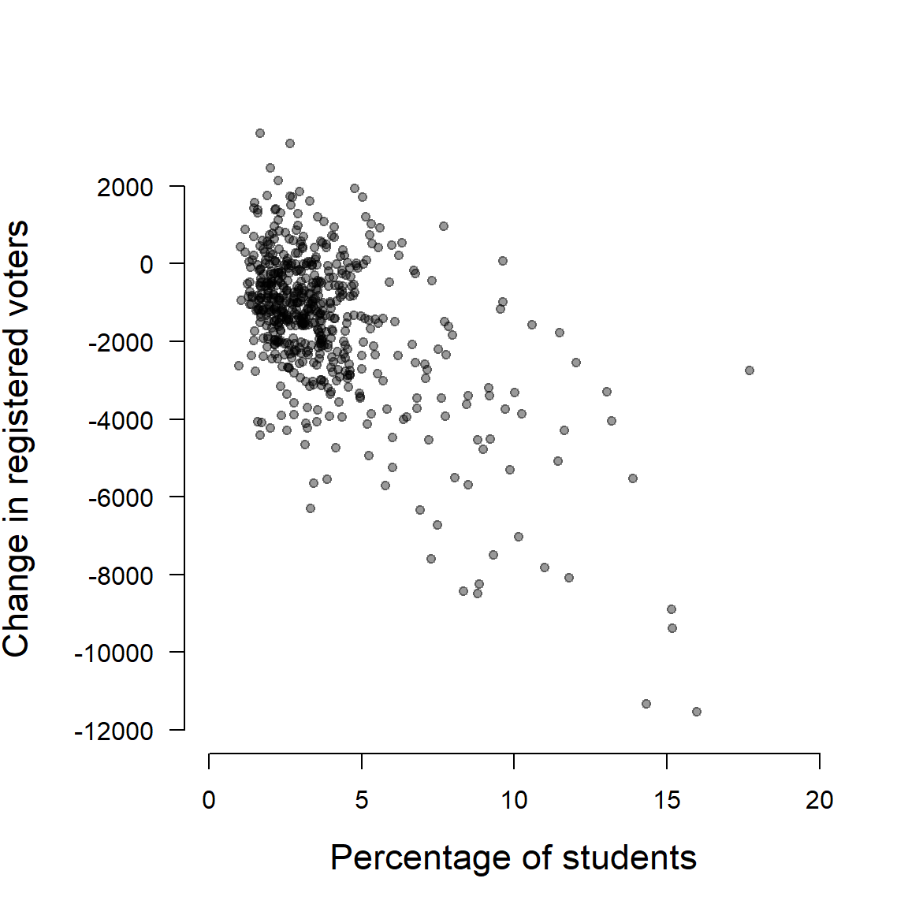
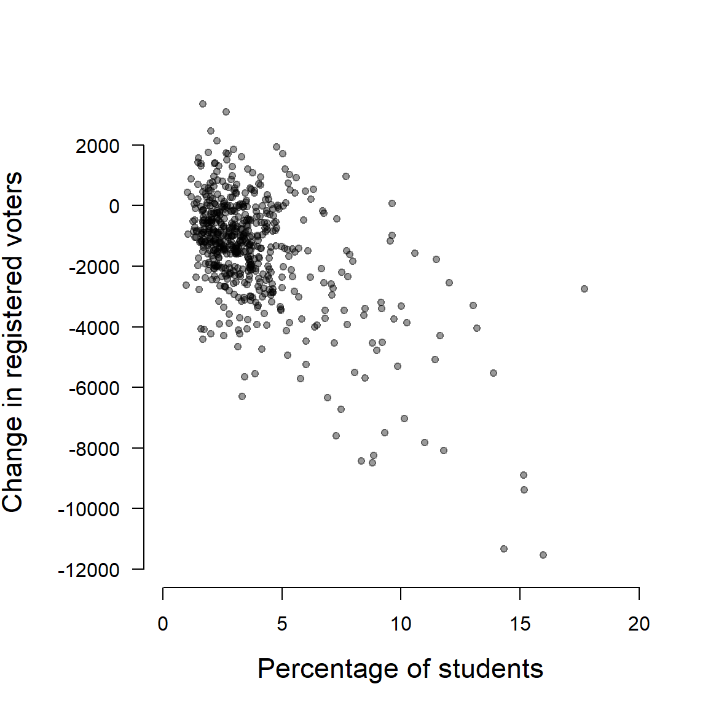
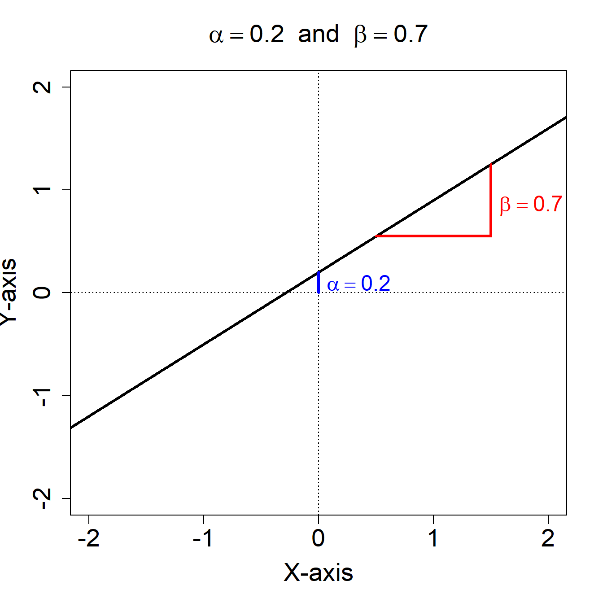
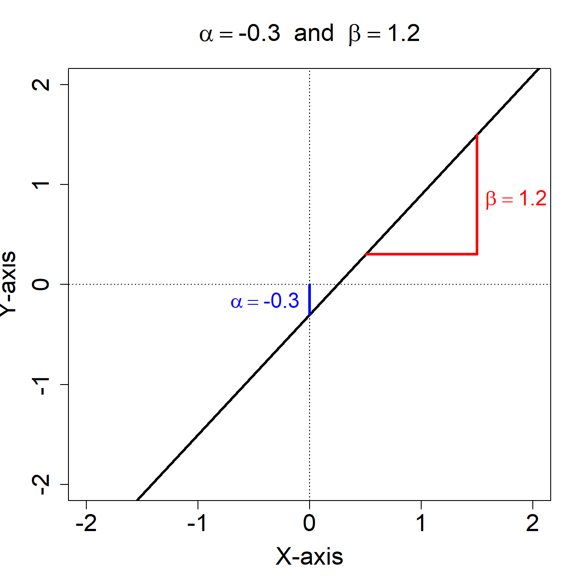
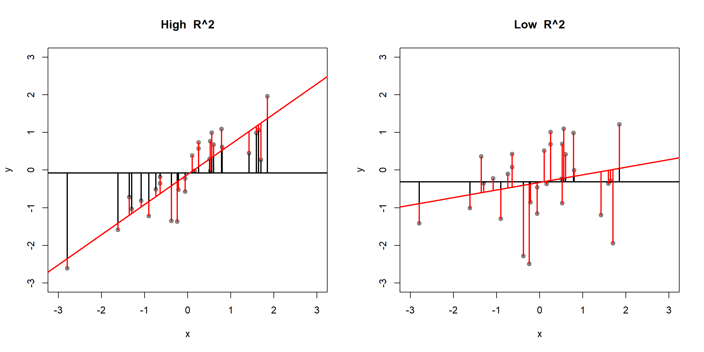

Social Data Institute, Day 3
Before 2015 in the UK, the head of the household could register all members of the household to vote. From 2015, all individuals had to register separately. There were particular concerns that this would lead to many students and young people `falling off’ the electoral register. We collect data on voter registration in 573 UK constituencies to evaluate this concern.
Unit of analysis: 573 parliamentary constituencies (all constituencies in England and Wales).
Dependent variable (Y): Change in the number of registered voters in a constituency (from 2010 to 2015).
Independent variable (X): Percentage of a constituency’s population who are full time students.

A model is a simplified abstraction of reality
Typically, models are used to describe key features or dimensions of some more complicated process
We do not want a model to capture every feature of reality, just those features that help us to describe the phenomena of interest
“All models are wrong, but some are useful” – George Box
We will be using statistical models which will always be “wrong”, but some will be useful
The most straightforward way of describing the relationship between two variables is with a line
A linear regression model is an approximation of the relationship between our independent variable X and our response variable Y
In our case, a linear regression model will approximate the true relationship between:
A line can be represented \(Y = \alpha + \beta X\)


A simple way to summarize the relationship between two variables is to assume that they are linearly related.
We can express this with the simple linear regression model:
\[ Y_i = \alpha +\beta X_i + \epsilon_i \]
Observations \(i = 1, \ldots , n\)
\(Y\) is the dependent variable
\(X\) is the independent variable
\(\alpha\) (“alpha”) is the intercept or constant
\(\beta\) (“beta”) is the slope
\(\epsilon_i\) (“epsilon”) is the error term or residual
\[ Y_i = \alpha +\beta X_i + \epsilon_i \]
\(\alpha\) and \(\beta\) are the coefficients or parameters of the regression line.
\(\epsilon_i\) is the error term
In our voter registration example:
What does \(\alpha\) represent?
What does \(\beta\) represent?
If \(\beta\) represents the change in Y that is associated with a a “one-unit” change in X, we need to know the units in which X is measured.
For example, a “one-unit” increase in…
Question: What is a one-unit increase in the “percentage of students”?
Answer: A one percentage point increase in the percentage of students.
A frequent interpretation error is to confuse percentage changes with percentage point changes. What’s the difference?
An increase in the percentage of students from 40% to 44% represents:
An increase of 4 percentage points
An increase of 10 percent
When including percentage variables in regression models, we will (almost) always speak about changes in percentage points.
\(\alpha\) & \(\beta\) represent the average relationship between \(X\) and \(Y\)
We would like to know the numerical values that \(\alpha\) and \(\beta\) take
We don’t know these values so we must estimate them
We estimate the values of the parameters from the data
We use a slightly different notation to indicate estimated parameters
We can also use the values of \(\hat{\alpha}\) and \(\hat{\beta}\) to calculate fitted or predicted values for any of our sample of X observations.
The fitted values \(\hat{Y}_i\) are:
\[\hat{Y}_i = \hat{\alpha} + \hat{\beta} X_i, \ i=1, \dots, n\]
The fitted values tell us what the best guess is for Y for a specific value of X.
The residuals \(\hat{\epsilon}_i\) are \[\hat{\epsilon}_i = Y_i - \hat{Y}_i, \ i=1, \dots, n.\]
The residuals tell us how far our best guess for each observation is from the value of Y we observe in the sample.
The main goal of the simple regression model is to estimate a line that “fits” the data. Which of these lines best “fits” our data?
The most widely used approach to estimating the parameters of the linear regression model is the ordinary least squares (OLS) method.
The OLS estimator chooses the regression coefficients so that the estimated line is as close as possible to the data
Formally, from all possible \(\alpha\) and \(\beta\) values, it chooses \(\hat{\alpha}\) and \(\hat{\beta}\) that minimize the sum of the squared residuals (SSR)
\[SSR = \sum_{i=1}^n \Big[ Y_i - \big(\hat{\alpha} + \hat{\beta} X_i\big)\Big]^2 = \sum_{i=1}^n (Y_i - \hat{Y}_i)^2\]
\(\rightarrow\) OLS selects the line that minimizes the sum of the squared distances between each point and the line
When we have only two variables, we can apply two straightforward formulae to recover the OLS estimates:
\[ \hat{\beta} = \frac{\sum_{i=1}^N (Y_i - \bar{Y})(X_i - \bar{X})}{\sum_{i=1}^N(X_i - \bar{X})^2} = \frac{Cov(X,Y)}{Var(X)} \] \[ \hat{\alpha} = \bar{Y} - \hat{\beta}\bar{X} \]
where \(\bar{X}\) and \(\bar{Y}\) are the sample means of \(X\) and \(Y\).
Now estimate the unknown parameters for our data in R.
What is the interpretation of \(\hat{\beta}\) = -445?
Generic: A one-unit increase in X is associated with a \(\hat{\beta}\) change in Y, on average.
Specific: A one point increase in the percentage of students in a constituency is associated with a decrease of -445 in the number of registered voters, on average.
What is the interpretation of \(\hat{\alpha}\) = 205.1?
Generic: \(\hat{\alpha}\) is the average value of Y, when X is equal to 0
Specific: For a hypothetical constituency with 0 students, the model predicts that the number of registered voters would increase by 205 between 2010 and 2015.
This interpretation of the intercept is not meaningful, as it extrapolates outside the range of the data.
We can also calculate fitted values (\(\hat{Y}_i = \hat{\alpha} + \hat{\beta} X_i\)) for any arbitrary value of X which may be of interest.
Measures of model fit help us to assess the degree to which our model approximates the real variation in our data.
\(R^2\) measures the proportion of the variation in \(Y_i\) that is explained by \(X_i\). It varies between between 0 and 1 and can be used to describe how much of the variation in our dependent variable is “explained” by our independent variable.
If X explains all the variation in Y, then \(R^2 = 1\)
If X explains none of the variation in Y, then \(R^2 = 0\)
\(R^2\) starts from the identity \[ Y_i = \hat{Y}_i+\hat{\epsilon}_i \] where
Imagine that we were to use a really dumb “model” to predict \(Y\) for each value in our data: \[\hat{Y}_{i\text{(dumb)}}= \bar{Y}\]
We could assess the accuracy of these “predictions” by calculating the distance between the predicted values and the observed values: \[\text{TSS (Total Sum of Squares)} = \sum_{i=1}^n (Y_i - \hat{Y}_{i\text{(dumb)}})^2=\sum_{i=1}^n(Y_i-\bar{Y})^2 \]
The TSS is therefore the sum of the squared distances between each observation and the mean.
We can then compare the predictions from this dumb model, to the predictions (fitted values) from our regression model: \[\hat{Y}_{i\text{(ols)}}= \hat{\alpha} + \hat{\beta}X_i\]
Again, let’s calculate the accuracy by summing the distances between the predicted and observed values (i.e. the residuals): \[\text{SSR (Sum of Squared Residuals)} = \sum_{i=1}^n (Y_i - \hat{Y}_{i\text{(ols)}})^2\]
If our regression model is doing a good job, we should make fewer or smaller prediction errors than when using the dumb model.
The \(R^2\) is a statistic that summarises how much better the predictions from our regression model are relative to a baseline model where we just use the mean value of Y as a prediction for all observations (i.e. the dumb model)
Definition:
The \(R^2\) is defined as
\[ R^2 = \frac{TSS - SSR}{TSS} = 1-\frac{SSR}{TSS} \]
where
Intuition:
\(R^2 = \frac{TSS - SSR}{TSS} = 1-\frac{SSR}{TSS}\)
What does \(R^2\) tell us?
Large values \(\rightarrow\) independent variable is good at predicting Y
Small values \(\rightarrow\) independent variable is poor at predicting Y
What does \(R^2\) not tell us?
Large \(R^2\) does not imply a causal relationship
Low \(R^2\) does not necessarily imply a useless regression